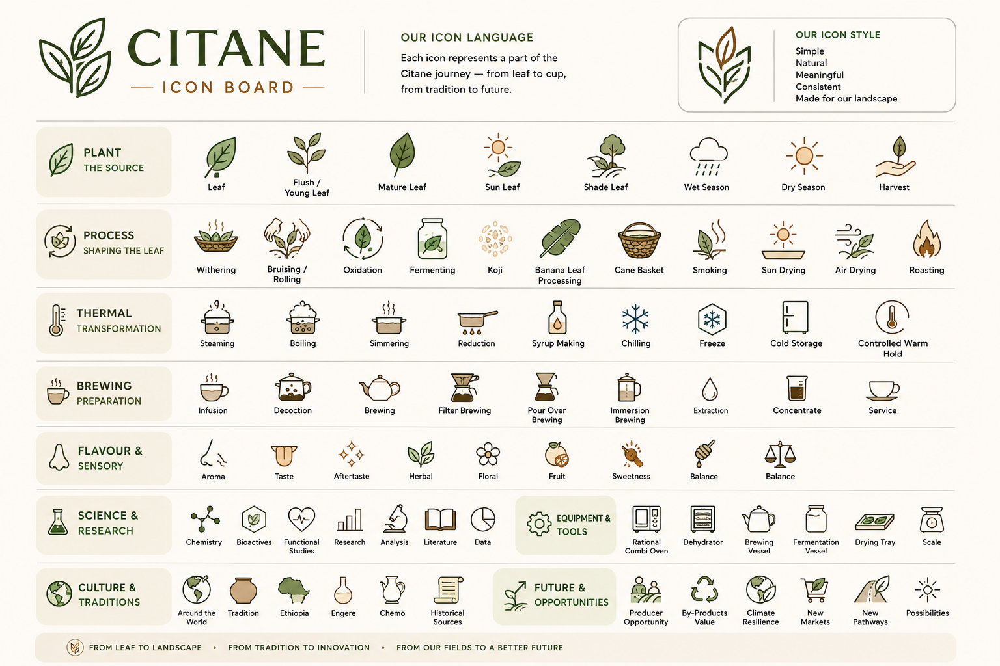

The complete Citane visual language — a master reference for all icon categories used across the fourteen vocabulary sections.

Tap image to view full board.
Chandragiri Arabica · rubber shade · 130 m · Karavaloor · Citane / KoffyKraft. The icon system was developed specifically for Buna — not borrowed from tea or coffee conventions.
The icon board presents the full Citane visual vocabulary in a single view. Individual sections of the vocabulary reference individual icons with definitions and evidence tags. This board serves as the master overview and navigation point.
The living plant — from root system to leaf tip. Used across Sections 02–06.
See Plant — The Source →ObservedThe journey from leaf to dried product. Processing methods, equipment, and techniques. Used across Sections 09–11.
See Process — Icon Board →ObservedFlavour, aroma, mouthfeel, and finish. The vocabulary of the cup. Used in Sections 12–13.
See Flavour & Aroma →ObservedThe four documented Buna traditions — Engere, Kuti, Chemo, Kawa Daun. Visual shorthand for tradition attribution across the library.
See Traditions →TraditionalSustainability, landscape, and impact concepts. Used in Section 14.
See Environment & Impact →ObservedThe four evidence levels used throughout the vocabulary: Research · Traditional · Observed · Hypothesis. Appear on every term card.
None →